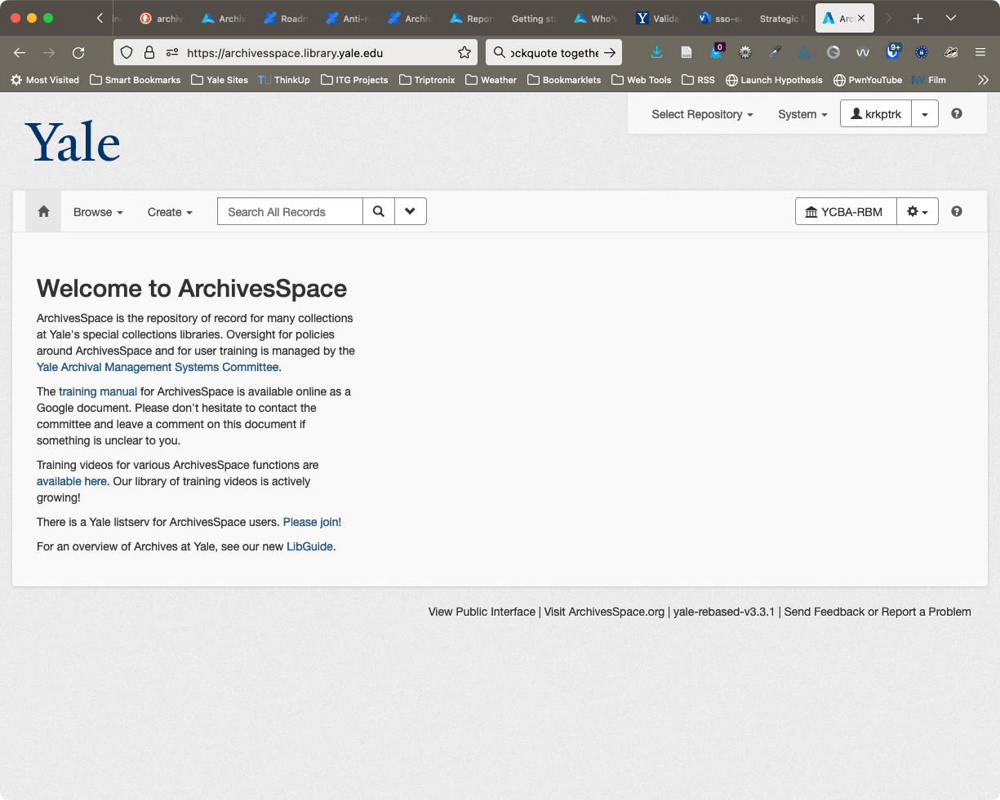
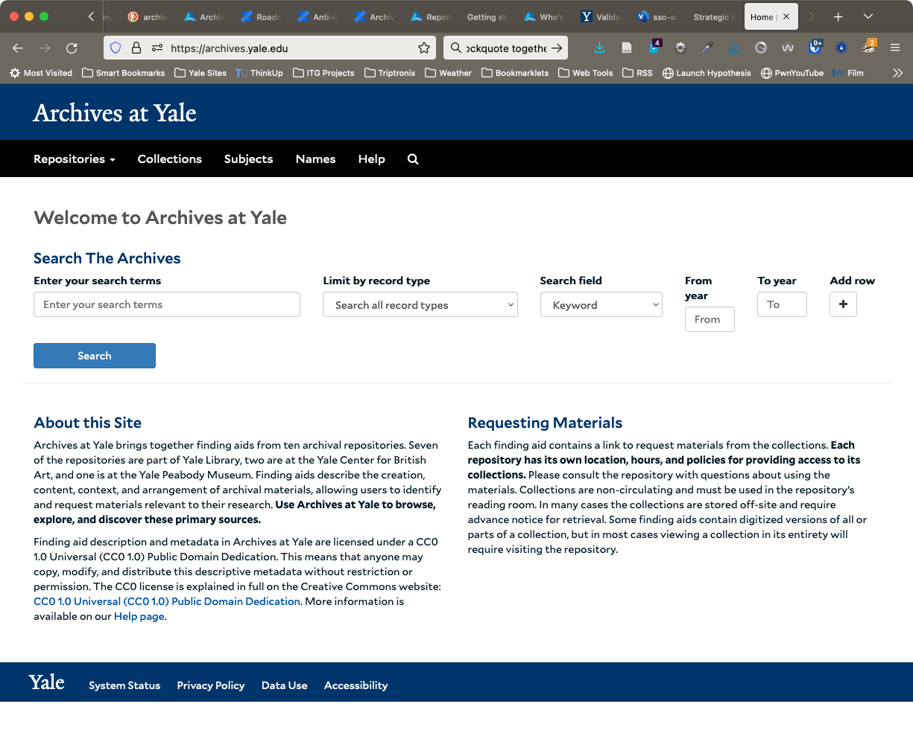

Created by Trip Kirkpatrick
ArchivesSpace is the open source archives information management application for managing and providing web access to archives, manuscripts and digital objects.
Allows us to consolidate in a single piece of software a wide range of intellectual, financial, managerial, and other professional archives work.
It is* to special collections what Voyager and ORBIS are to general collections
Administrative interface for staff as well as a public discovery interface

